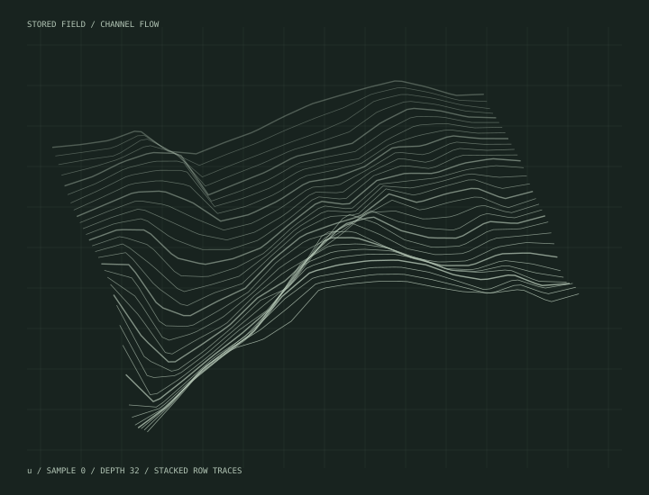

Curiosity,
under
constraint.
A collection of investigations into complex physical and computational systems. From turbulent flow to market microstructure, each study begins with a question—and is shaped by evidence.
Physics before
performance.
Six model families. Four wall regions. One question: what makes a turbulent-flow prediction credible?
ENTER THE RESEARCH ↗3D FIELD DIAGNOSTICS · EXPERIMENTS · RESEARCH SOFTWARE
THE FIELD, LINE BY LINE EXPLORE ↗Price.
Then time.
A deterministic matching core. Follow the orders, inspect the queue and account for every execution.
ENTER THE EXECUTION LABORATORY ↗BUY 100 → A FILLS 50 · B FILLS 50 · B RETAINS 20
ACTUAL C++ LOGIC IN YOUR BROWSER ↗A landing.
A flow problem.
Build the nozzle. Examine the plume. Follow the pressure and shear. A computational investigation of planetary landing and fluidic flow control.
ENTER THE HYPERSONIC RESEARCH ↗Research, in context.
The archive is not divided into isolated subjects. Each entry has methods and ideas connecting it to the others. Select a discipline above, or investigate the relationships below.
A different field.
The same instincts.
Choose a method. The map, related work and computational field respond together. A method can connect projects that otherwise look unrelated.
Select a connection.
Follow a methodological connection and see the work it touches, including projects across different disciplines.
RELEVANT PROJECTSTwo projects. One chain of ideas.
Choose any two studies. The atlas will identify a shortest conceptual path through their associated methods. These links are curated themes, not claims that one project uses the other's implementation.
Inspect the mechanism.
A small executable demonstration of price-time order matching. Place orders, inspect queue priority and follow each event. This is a simplified JavaScript teaching model—not a benchmark or a demonstration of the actual C++ repository.
Test the matching logic.
Limit orders execute against eligible resting orders; unmatched quantity joins the book. Multiple orders at the same price are handled in arrival order.
How certain
is certain?
A small, transparent demonstration of split-conformal prediction. Change the target coverage to see a prediction interval widen, the calibration threshold shift, and the proportion of held-out observations falling inside the band change.
Formulate precisely.
Build deliberately.
Question the result.
The most useful technical work makes its assumptions visible. Three developed studies connect turbulent-flow reconstruction, a verified C++ matching engine and hypersonic plume simulation. Each exposes its implementation decisions, evidence and limits.
FORMULATE → IMPLEMENT → EVALUATEBuilt across
disciplines.
Aeronautical engineering at the University of Glasgow. Postgraduate research at the University of Manchester. Work at the intersection of computation, physical modelling and quantitative software.
MSc — Distinction
BEng Aeronautical Engineering — 2:1